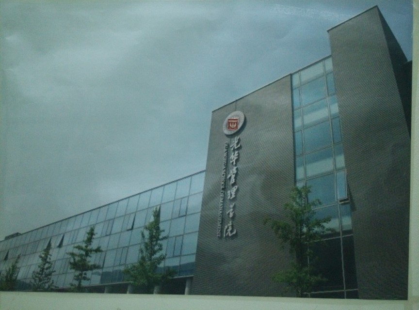

写这些东西，目的有三，一是趁记忆还清晰，好好总结刚刚过去的这一年；二是作为对超有爱的高二学弟学妹们的回馈；三是告诉你们，这条路已经有很多人走过，你终将走完它，并怀念它。
一 关于准备工作
- 不建议合租，也不一定非要租房。能清静的学习生活就好。（有时候父母 租的房子边的工地之类乱七八糟的事情反而会成为你学习的阻力）
- 手机就用学霸机吧。除非你能一晚自习不看信息。
- 参考书能少买就少买。
- 能戒撸戒Dota戒WoW就尽早戒。
二 一轮复习
- 如果你想“逆袭”的话，趁新鲜感还没过去，暑假就开始努力吧。到了下学期你会想吐。
- 关于弱科：很多时候我们做不好一件事，只是因为之前没有努力，之后又想逃避。
英语听力不好，找老师要资料天天听半个小时啊；
语文文言文看不懂，在每日计划里加一篇文言文训练啊，语文课别老发呆多看看实词虚词啊；
数学老是错小题，从用草稿纸，认真写作业开始一点一点提高正确率啊；
理综选择题错五六个不是你粗心，是你一轮没抓住机会补好基础； - 多给自己积极而务实的心理暗示
“太难了”只是因为不想动笔算，或者你根本没掌握知识点；
“烦死了，不想做”不如改成“再做两题就休息一下”
“我数学一定要上120！”不如改成“这个月我要拿下圆锥曲线大题”，也不如改成“课间操没别的事就专心做一道，用白纸工整计算，对照答案仔细分析过程，搞完吃点东西上个厕所犒劳自己”
“今晚带什么书回去装13呢？”（同桌神犀利吐槽），十点多带两本五三一本学案回去你确定能做一本？高考需要动力更需要务实。 - 强烈建议基础不好的同学一轮复习死跟老师。夹生饭是咽不下去的。
每天都有计划，很充实地学，一轮会过得很快。 - 天赋决定了你所能达到的上限，努力决定了你所能达到的上限。以大部分人的努力程度之低，还远远没有达到拼天赋的地步。
三 月考和心态
- “月考都是放屁。”
“高中三年只有一次考试” “一模569二模601三模632高考639你敢信？”（学长版）“不到分数出来谁也没办法确定自己考得如何，只要每天都用心去做了就应该充满信心自己的水平一天比一天好，自己的心态也相对而言要越来越平和。既然水平越来越高，月考没考好是查漏补缺到了或者是给最近的状态敲警钟了，考好了是种肯定不要洋洋得意”（学姐版）
Anyway，take it easy。像我这样把高三十二次月考卷拿回来做纪念也是挺好的~
（顺便吐槽下，总感觉高考试卷还没有炎德的印刷质量好）
- 考前焦虑都是病，得治。良药为翻错题调整呼吸，猛药为看小说玩手机，稀世奇药为找人逛烈士公园。
- 普通的心态考出来不会差，但要一个高端的心态才有可能超常发挥。”
现在来看 ，所谓的高端心态就是平静中带点紧张，麻木中带点兴奋吧。
四 考前一月
- （仁者见仁智者见智学霸寂寞空虚冷学渣堕落女生快崩溃男生开始浪的时候，先前最努力的那个人慢慢的有了举重若轻的能力，所以看起来总是毫不费力的样子。）
关键在“调整心态”“作息规律”“查漏补缺”（注意顺序） - 这世间所有的坚持，都是因为热爱。（其实只是觉得高考这套巨大的理综卷都做得只剩化学两道大题目了快点搞完回去种田吧。。。）
附：文章，资料，方法推荐
文章
（每一篇都读了十遍不止好么考前一直在朗诵最后一篇好么你们一定要去看!!!）
生命是一种长期而持续的积累
高考：我不爱你，但是谢谢你
给即将要考北大的你
资料
天利38套版本的高考真题（淡黄色的卷子，小黑屋或网上有卖，做起来比五三爽多了。理综分单科买，一节自习做张化学什么的刚好，考前可以单刷生物物理选择题化学大题什么的，还有种自己是西藏状元的赶脚。数学每周末做一张。）
MBOOK七元系列（嫌弃老师的速度的时候可以看看例题，东西小就是没压力）
我大五三（下学期就没动过了，不过你们这样把成套的空五三捐给湘西真的好吗）
李悦超的月考总结和理科综合两本笔记，一中报刊亭和网上都有卖（受益匪浅）
方法
英语单词：百词斩（手机APP）
重点错题本（不抄题只写关键处，如同分异构体要减去本身直线要考虑斜率的存在性等，对2B错误层出不穷的人有奇效）（源自李悦超的笔记）
题型归纳，适合二轮用，在错题本上用一两面自己归纳一类题（如电磁感应综合应用题），查漏补缺神器。
“梦想是一个一说出来就矫情的东西，它是生长在暗地里的种子，只有破土而出，拔节而长，终有一日开出花来，才可以正大光明的让所有人都知道”
每个追梦的少年都是值得敬佩的，即使那些梦最后一个都不能实现，你也在追梦的路上成为了更好的人。

陪了我走过高三的海报之一
要做什么就现在开始吧。
yesterday u said tomorrow,just do it.
有人说，高考的压力，用四句概括，是：
学霸难当，出租屋寂寞，前途不可知，还没有妹子陪。
怎么样，是不是很贴切？
希望这些东西能在心情不好的时候给你一点力量
少年，青春一晃而过~
JD_Forever
习帝二年初夏明经科科举后